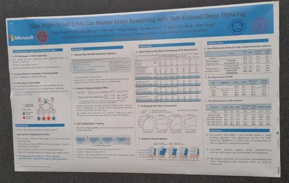
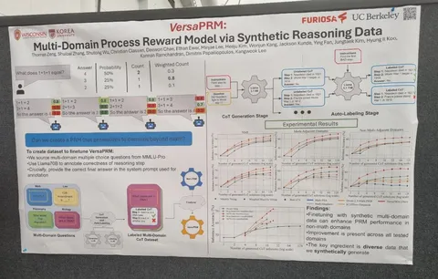
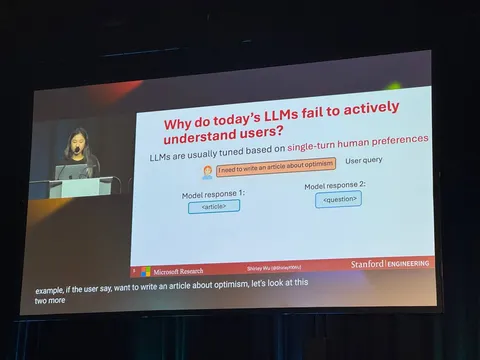
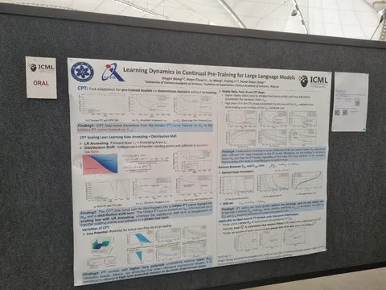
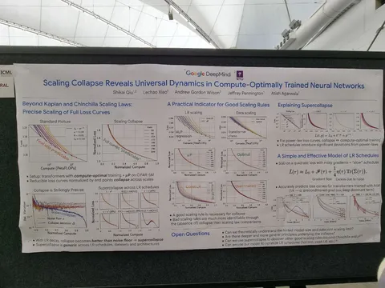
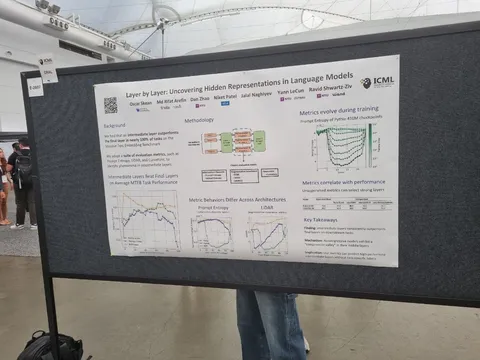
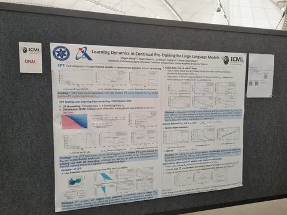
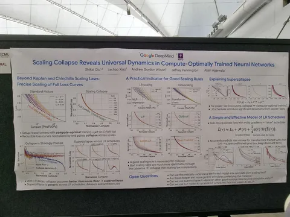
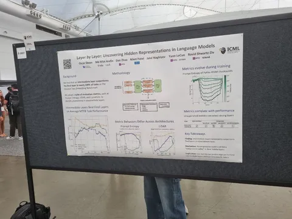

И ещё постеры с ICML 2025
rStar-Math: Small LLMs Can Master Math Reasoning with Self-Evolved Deep Thinking
Статья показывает, как с помощью маленькой модели (1,5-7В) добиться качества на уровне больших вроде OpenAI o1. Для этого использует реворд-модель, которая умеет оценивать каждый шаг в рассуждении (process reward model, PRM) и генерируют рассуждения с помощью Monte Carlo Tree Search.
Как получить качественную PRM: шаг за шагом бустим политику и PRM. Сначала обучаем начальную политику на синтетике от DeepSeek-coder v2 (236B). Далее, используя её, получаем данные для обучения PRM. Следующим шагом с помощью и политики, и PRM генерируем новые более качественные данные. Обновляем все модели. А в конце полируем их, генерируя и обучаясь на траекториях для более сложных задач.
На каждом шаге для валидации правильности шагов используется код (то есть просят модель сгенерировать python-код для проверки шага). Результат — улучшение скоров на десятки процентов на математических бенчмарках.
VersaPRM: Multi-Domain Process Reward Model via Synthetic Reasoning Data
Ещё немного о PRM — VersaPRM. Авторы заметили, что такие модели работают только для математики, но не на остальных доменах (биология, философия, юридический домен). Проблема в данных — нет качественных размеченных пошаговых рассуждений для этих доменов.
Взяли вопросы из нужных доменов, сгенерировали рассуждения небольшой моделью (Llama-3.1 8B), оценили каждый шаг большой моделью (Llama-3.1 80B), и обучили на этом PRM. Далее при генерации ответов — взвешенный majority vote, где в качестве весов используют усреднённое по шагам предсказания PRM.
Получают хорошие приросты по всем доменам. Правда, тут есть вопросы, так как для обучения и теста применяют данные из одного и того же бенчмарка MMLU-Pro.
CollabLLM: From Passive Responders to Active Collaborators
На сессии Alignment and Agents был доклад, отмеченный как Outstanding Paper. Он посвящён тому, что диалоговая модель иногда должна отвечать не сразу, а сначала уточнить запрос пользователя — но без лишней «болтовни». Доклад довольно простой, и при этом получил признание.
Интересное увидели❣ Алексей Поспелов и Ермек Капушев
#YaICML25
Душный NLP
rStar-Math: Small LLMs Can Master Math Reasoning with Self-Evolved Deep Thinking
Статья показывает, как с помощью маленькой модели (1,5-7В) добиться качества на уровне больших вроде OpenAI o1. Для этого использует реворд-модель, которая умеет оценивать каждый шаг в рассуждении (process reward model, PRM) и генерируют рассуждения с помощью Monte Carlo Tree Search.
Как получить качественную PRM: шаг за шагом бустим политику и PRM. Сначала обучаем начальную политику на синтетике от DeepSeek-coder v2 (236B). Далее, используя её, получаем данные для обучения PRM. Следующим шагом с помощью и политики, и PRM генерируем новые более качественные данные. Обновляем все модели. А в конце полируем их, генерируя и обучаясь на траекториях для более сложных задач.
На каждом шаге для валидации правильности шагов используется код (то есть просят модель сгенерировать python-код для проверки шага). Результат — улучшение скоров на десятки процентов на математических бенчмарках.
VersaPRM: Multi-Domain Process Reward Model via Synthetic Reasoning Data
Ещё немного о PRM — VersaPRM. Авторы заметили, что такие модели работают только для математики, но не на остальных доменах (биология, философия, юридический домен). Проблема в данных — нет качественных размеченных пошаговых рассуждений для этих доменов.
Взяли вопросы из нужных доменов, сгенерировали рассуждения небольшой моделью (Llama-3.1 8B), оценили каждый шаг большой моделью (Llama-3.1 80B), и обучили на этом PRM. Далее при генерации ответов — взвешенный majority vote, где в качестве весов используют усреднённое по шагам предсказания PRM.
Получают хорошие приросты по всем доменам. Правда, тут есть вопросы, так как для обучения и теста применяют данные из одного и того же бенчмарка MMLU-Pro.
CollabLLM: From Passive Responders to Active Collaborators
На сессии Alignment and Agents был доклад, отмеченный как Outstanding Paper. Он посвящён тому, что диалоговая модель иногда должна отвечать не сразу, а сначала уточнить запрос пользователя — но без лишней «болтовни». Доклад довольно простой, и при этом получил признание.
Интересное увидели
#YaICML25
Душный NLP

2 142 просмотров · 18 реакций
Открыть в Telegram · Открыть пост на сайте
 
